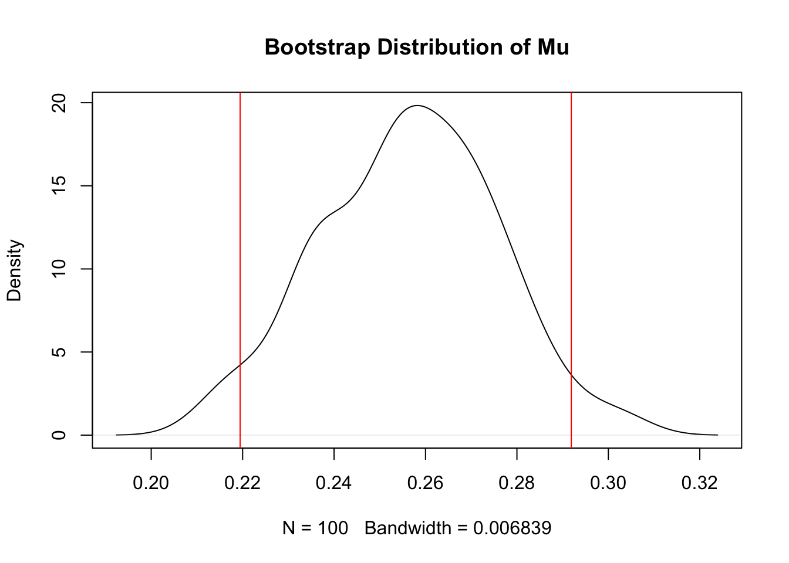
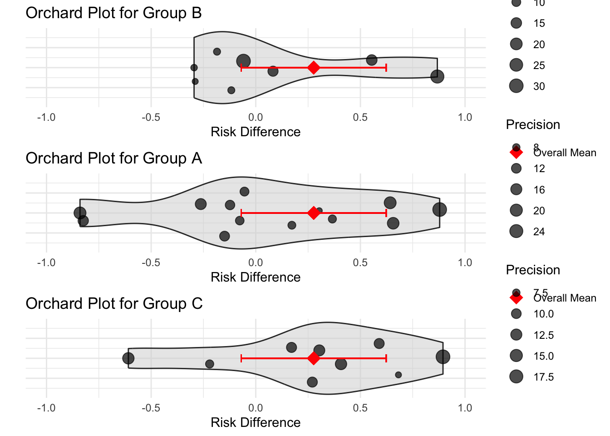
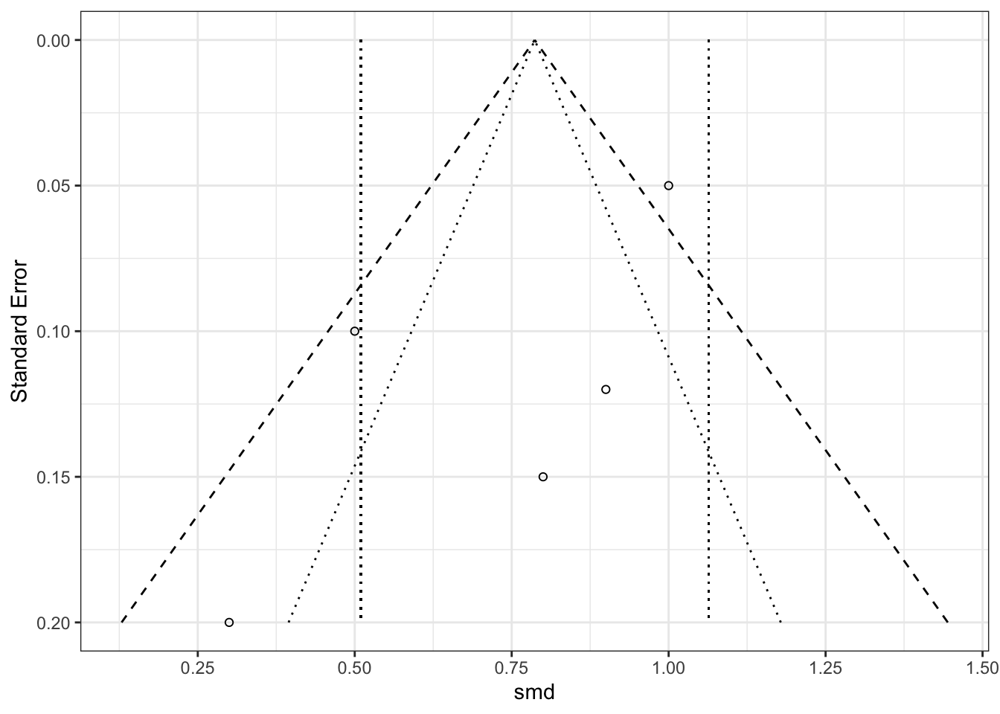

Chapter 4 Chapter: Plotting meta-analytical results
4.0.1 Overview
This chapter focuses on the visualization of meta-analytical results, which is crucial for effectively communicating findings and insights drawn from aggregated data. Visualization techniques help researchers and stakeholders quickly grasp complex relationships and patterns within the data. In this chapter, we will cover various plotting methods, including forest plots, funnel plots, and advanced visualizations using R packages such as ggplot2, metafor, and dmetar.
4.0.2 Example 1: Forest plot with metafor
dat <- data.frame(author = c("Dyson", "Jönsson", "Morris", "Saslow", "Saslow", "Sato", "Tay", "Yamada"),
year = c(2010, 2009, 2019, 2014, 2017, 2017, 2014, 2014),
ai = c(3, 6, 11, 8, 6, 4, 36, 2), ##Nb event experimental group
n1i = c(6, 6, 21, 9, 11, 22, 46, 12), ## Total experimental group
ci = c(1, 3, 0, 5, 0, 0, 30, 2), ## Nb events control group
n2i = c(6, 6, 12, 13, 8, 27, 47, 12)) ## Total control group
### calculate risk differences and corresponding sampling variances (and use
### the 'slab' argument to store study labels as part of the data frame)
dat <- escalc(measure = "RD", ai = ai, n1i = n1i, ci = ci, n2i = n2i, data = dat,
slab = paste(" ", author, year), addyi = FALSE)
### fit random-effects model (using the DL estimator)
res <- rma(yi, vi, data = dat, method = "DL")
### colors to be used in the plot
colp <- "#6b58a6"
coll <- "#a7a9ac"
### total number of studies
k <- nrow(dat)
### generate point sizes
psize <- weights(res)
psize <- 1.2 + (psize - min(psize)) / (max(psize) - min(psize))
### get the weights and format them as will be used in the forest plot
weights <- round(weights(res), 1)
### adjust the margins
par(mar = c(2.7, 3.2, 2.3, 1.3), mgp = c(3, 0, 0), tcl = 0.15)
### forest plot with extra annotations
sav <- forest(dat$yi, dat$vi, xlim = c(-3.4, 2.1), ylim = c(-0.5, k + 3), alim = c(-1, 1), cex = 0.88,
pch = 18, psize = psize, efac = 0, refline = NA, lty = c(1, 0), xlab = "",
ilab = cbind(paste(dat$ai, "/", dat$n1i), paste(dat$ci, "/", dat$n2i), weights),
ilab.xpos = c(-1.9, -1.3, 1.2), annosym = c(" (", " to ", ")"),
rowadj = -0.07)
### add the vertical reference line at 0
segments(0, -1, 0, k + 1.6, col = coll)
### add the vertical reference line at the pooled estimate
segments(coef(res), 0, coef(res), k, col = colp, lty = "33", lwd = 0.8)
### redraw the CI lines and points in the chosen color
segments(summary(dat)$ci.lb, k:1, summary(dat)$ci.ub, k:1, col = colp, lwd = 1.5)
points(dat$yi, k:1, pch = 18, cex = psize * 1.15, col = "white")
points(dat$yi, k:1, pch = 18, cex = psize, col = colp)
### add the summary polygon
addpoly(res, row = 0, mlab = "Total (95% CI)", efac = 2, col = colp, border = colp)
### add the horizontal line at the top
abline(h = k + 1.6, col = coll)
### redraw the x-axis in the chosen color
axis(side = 1, at = seq(-1, 1, by = 0.5), col = coll, labels = FALSE)
### now we add a bunch of text; since some of the text falls outside of the
### plot region, we set xpd=NA so nothing gets clipped
par(xpd = NA)
### adjust cex as used in the forest plot and use a bold font
par(cex = sav$cex, font = 2)
### add headings
text(sav$xlim[1], k + 2.5, pos = 4, "Study or\nsubgroup")
text(mean(sav$ilab.xpos[1:2]), k + 3.4, "No of events / total")
text(0, k + 2.7, "Risk difference, IV,\nrandom (95% CI)")
text(c(sav$ilab.xpos[3], sav$xlim[2] - 0.35), k + 2.7, c("Weight\n(%)", "Risk difference, IV,\nrandom (95% CI)"))
### add 'Favours control'/'Favours experimental' text below the x-axis
text(c(-1, 1), -2.5, c("Favors control", "Favors experimental"), pos = c(4, 2), offset = -0.3)
### use a non-bold font for the rest of the text
par(cex = sav$cex, font = 1)
### add text with heterogeneity statistics
text(sav$xlim[1], -1, pos = 4, bquote(paste("Test for heterogeneity: ",
tau^2, "=", .(round(res$tau2, digits = 2)), "; ",
I^2, "=", .(round(res$I2, digits = 2)), "%")))
### add text with overall estimate
text(sav$xlim[1], -2.5, pos = 4, bquote(paste("Overall effect: ",
riskdiff == .(round(coef(res), digits = 2)))))
### add titles
text(sav$xlim[1], k + 4.5, pos = 4, "Risk difference between low and very low carbohydrate diets")
4.0.3 Example 2: Forest plot with meta
library(meta)
# Perform meta-analysis using the metagen function from `meta`
# Perform meta-analysis using the metagen function from `meta`
meta_analysis <- metagen(
TE = dat$yi, # Use the calculated effect sizes
seTE = sqrt(dat$vi), # Standard errors
studlab = paste(dat$author, dat$year),
data = dat,
sm = "RD", # Risk Difference as the summary measure
fixed = FALSE, # Using a random-effects model
random = TRUE,
method.tau = "REML", # Restricted maximum likelihood estimator
hakn = TRUE, # Knapp-Hartung adjustment
title = "Risk Difference between Diet Groups"
)
# Create a forest plot with custom options and store the output
forest_plot <- meta::forest(
meta_analysis,
prediction = TRUE, # Add a prediction interval
print.tau2 = TRUE, # Print the tau-squared statistic in the plot
leftlabs = c("Study", "Risk Diff", "Std. Error"), # Custom labels
lab.e = "Favours Low Carb", # Label for experimental group
lab.c = "Favours Control", # Label for control group
col.study = "#6b58a6", # Study point color
col.diamond = "#5e84c0", # Color of the summary diamond
col.square = "white" # Color for individual study estimates
)
library(grid)
grid.text("Meta-analysis of Risk Differences in Diet Studies",
x = 0.5, y = unit(0.95, "npc"),
gp = gpar(fontsize = 14, fontface = "bold"))
grid.text("Random-effects model with Knapp-Hartung adjustments",
x = 0.5, y = unit(0.93, "npc"),
gp = gpar(fontsize = 12))4.0.4 Example 3: Forest plot with ggplot
##
## Attaching package: 'ggpubr'## The following object is masked from 'package:cowplot':
##
## get_legendlibrary(ggstar)
# Prepare the data: Calculate estimates, confidence intervals, and other metrics
dat <- dat %>%
mutate(
estimate = yi, # Estimated effect size
conf.low = yi - 1.96 * sqrt(vi), # Lower bound of the confidence interval
conf.high = yi + 1.96 * sqrt(vi), # Upper bound of the confidence interval
Sub_Cat_intervention = paste(author, year) # Combine author and year for labels
)
# Create a ggplot forest plot
p <- ggplot(dat, aes(estimate, reorder(Sub_Cat_intervention, estimate))) +
# Add stars for effect sizes
geom_star(starshape = 12, size = 4, starstroke = 1.1, color = "#6b58a6") +
# Add points for individual study estimates
geom_point(aes(size = n1i), shape = 21, alpha = 0.8, fill = "#ff9d02",
position = position_dodge(width = 0.6)) +
# Add error bars using confidence intervals
geom_errorbar(aes(xmin = conf.low, xmax = conf.high), color = "black",
size = 0.2, width = 0.1) +
# Add a vertical line at x = 0
geom_vline(xintercept = 0, linetype = 2, color = "gray") +
# Apply ggpubr theme
theme_pubr() +
# Set x-axis limits
xlim(c(-3.5, 3.5)) + # Adjust limits based on your data
# Remove legend
theme(legend.position = "none") +
# Set axis labels
labs(y = "", x = "Risk Difference (RD)")
# Display the plot
print(p)
4.0.5 Example 4: Orchard plots
# Load required libraries
library(ggplot2)
library(dplyr)
library(metafor)
library(ggbeeswarm)
# Create a larger randomized dataset with valid constraints
set.seed(42) # For reproducibility
n_studies <- 30 # Total number of studies
dat <- data.frame(
author = paste("Study", 1:n_studies),
year = sample(2000:2020, n_studies, replace = TRUE),
n1i = sample(10:100, n_studies, replace = TRUE), # Total in experimental group
n2i = sample(10:100, n_studies, replace = TRUE) # Total in control group
)
# Randomly generate events ensuring that events do not exceed group sizes
dat$ai <- sapply(1:n_studies, function(i) sample(0:dat$n1i[i], 1)) # Events in experimental group
dat$ci <- sapply(1:n_studies, function(i) sample(0:dat$n2i[i], 1)) # Events in control group
# Calculate risk differences
dat <- escalc(measure = "RD", ai = ai, n1i = n1i, ci = ci, n2i = n2i, data = dat)
# Fit a random-effects model and create a subgroup variable
dat$subgroup <- sample(c("Group A", "Group B", "Group C"), n_studies, replace = TRUE)
# Create an empty plot list to store individual subgroup plots
plot_list <- list()
# Loop over each subgroup to create the overall mean for each
for (group in unique(dat$subgroup)) {
subgroup_data <- dat[dat$subgroup == group, ]
res <- rma(yi, vi, data = subgroup_data, method = "DL") # Fit model for subgroup
# Create the orchard plot for each subgroup
p <- ggplot(subgroup_data, aes(x = yi, y = 1)) +
geom_violin(fill = "lightgray", alpha = 0.5) +
geom_quasirandom(aes(size = 1/sqrt(vi)), alpha = 0.7) + # Use inverse of SE for size
geom_point(aes(x = res$b, y = 1, color = "Overall Mean"), size = 5, shape = 18) +
geom_errorbarh(aes(xmin = res$ci.lb, xmax = res$ci.ub, y = 1), height = 0.1, color = "red") +
labs(x = "Risk Difference", y = "", title = paste("Orchard Plot for", group)) +
scale_color_manual(name = "", values = c("Overall Mean" = "red")) +
theme_minimal() +
theme(axis.text.y = element_blank(), axis.ticks.y = element_blank()) +
xlim(c(-1, 1)) +
scale_size(range = c(2, 5), name = "Precision")
# Store the plot in the list
plot_list[[group]] <- p
}
# Display all orchard plots for each subgroup
library(gridExtra)
do.call(grid.arrange, c(plot_list, ncol = 1)) # Arrange plots in a single column
4.1 Analysis and Visualization of Publication Bias
Publication bias is a significant concern in meta-analysis, as it can distort the overall effect estimate and lead to misleading conclusions. In this section, we will discuss various methods for detecting and visualizing publication bias, including funnel plots, the trim and fill method, the Egger test, and Robust Bayesian Meta-Analysis.
4.1.1 Funnel Plots
A funnel plot is a scatter plot that helps visualize the relationship between the effect size and the precision of individual studies in a meta-analysis. It is an essential tool for identifying potential publication bias.
# Load necessary libraries
library(metafor)
library(ggplot2)
# Create a data frame with example data
data <- data.frame(
study = c("Study1", "Study2", "Study3", "Study4", "Study5"),
smd = c(0.5, 0.8, 0.3, 1.0, 0.9),
var_smd = c(0.1, 0.15, 0.2, 0.05, 0.12)
)
# Conduct a random-effects meta-analysis
res <- rma(yi = smd, vi = var_smd, data = data)
estimate <- res$b # Replace with your meta-analytic estimate if needed
se <- res$se # Replace with your standard error if needed
# Define a sequence for standard errors (SE) to create CI regions
se.seq <- seq(0, max(data$var_smd), 0.001)
# Calculate 95% and 99% confidence intervals for the region
ll95 <- estimate - (1.96 * se.seq)
ul95 <- estimate + (1.96 * se.seq)
ll99 <- estimate - (3.29 * se.seq)
ul99 <- estimate + (3.29 * se.seq)
# Compute confidence intervals for the mean meta-analytic estimate
meanll95 <- estimate - (1.96 * se)
meanul95 <- estimate + (1.96 * se)
# Store all calculated values in a single data frame for easy plotting
dfCI <- data.frame(ll95, ul95, ll99, ul99, se.seq, estimate, meanll95, meanul95)
# Draw the enhanced funnel plot with shaded CI regions and lines
funnel_plot <- ggplot(aes(x = var_smd, y = smd), data = data)+
# Add shaded areas for 95% and 99% CI regions
geom_point(shape = 1) +
xlab('Standard Error') + ylab('smd')+
geom_line(aes(x = se.seq, y = ll95), linetype = 'dotted', data = dfCI) +
geom_line(aes(x = se.seq, y = ul95), linetype = 'dotted', data = dfCI) +
geom_line(aes(x = se.seq, y = ll99), linetype = 'dashed', data = dfCI) +
geom_line(aes(x = se.seq, y = ul99), linetype = 'dashed', data = dfCI) +
geom_segment(aes(x = min(se.seq), y = meanll95, xend = max(se.seq), yend = meanll95), linetype='dotted', data=dfCI) +
geom_segment(aes(x = min(se.seq), y = meanul95, xend = max(se.seq), yend = meanul95), linetype='dotted', data=dfCI) +
scale_x_reverse()+
scale_y_continuous(breaks=seq(-1.25,2,0.25))+
coord_flip()+
theme_bw()
# Display the enhanced funnel plot
funnel_plot
4.1.1.1 Understanding Funnel Plots
Structure: In an ideal scenario, a funnel plot resembles an inverted funnel or a pyramid. This shape reflects that larger studies tend to be more precise (higher up on the plot), while smaller studies have more variability (scattered at the bottom).
Axes:
The x-axis represents the estimated effect size for each study (e.g., risk ratios, odds ratios plotted on a logarithmic scale, or mean differences).
The y-axis indicates the study precision, often measured by the standard error. Larger studies with greater precision are displayed at the top.
In a bias-free scenario, 95% of studies would be expected to lie within the dashed lines representing the 95% confidence interval.
4.1.1.2 Interpreting Funnel Plots
When analyzing a funnel plot, look for symmetry. A symmetrical plot suggests that publication bias is unlikely, while an asymmetrical plot may indicate bias. Image B illustrates an asymmetrical funnel, where points predominantly cluster on one side, suggesting that the summary estimate may overstate the effect.
4.1.2 Reasons for Asymmetry
Asymmetry in a funnel plot can arise from several factors:
Non-reporting Bias: Studies with non-significant results may be less likely to be published.
Methodological Quality: Studies with poor design may report exaggerated effect sizes.
True Heterogeneity: Variability in patient populations can lead to biased estimates, especially in smaller studies.
Artefactual Correlation: Correlations between effect estimates and their standard errors can create false asymmetry.
Chance: Random variation is more likely in analyses with fewer studies.
4.1.3 Trim and Fill Method
The trim and fill method adjusts for publication bias by estimating the number of studies that would need to be added to achieve symmetry. This method imputes missing studies to provide a more accurate effect size.
4.1.3.1 Example of Using Trim and Fill
# Perform trim and fill analysis
trimmed_res <- trimfill(res)
# Summary of the results
summary(trimmed_res)##
## Estimated number of missing studies on the right side: 1 (SE = 1.7009)
##
## Random-Effects Model (k = 6; tau^2 estimator: REML)
##
## logLik deviance AIC BIC AICc
## -1.7515 3.5031 7.5031 6.7219 13.5031
##
## tau^2 (estimated amount of total heterogeneity): 0.0000 (SE = 0.0673)
## tau (square root of estimated tau^2 value): 0.0022
## I^2 (total heterogeneity / total variability): 0.00%
## H^2 (total variability / sampling variability): 1.00
##
## Test for Heterogeneity:
## Q(df = 5) = 4.6326, p-val = 0.4623
##
## Model Results:
##
## estimate se zval pval ci.lb ci.ub
## 0.8407 0.1348 6.2349 <.0001 0.5764 1.1050 ***
##
## ---
## Signif. codes: 0 '***' 0.001 '**' 0.01 '*' 0.05 '.' 0.1 ' ' 1# Create a funnel plot with imputed studies
funnel(trimmed_res, main = "Funnel Plot with Trim and Fill")
In this example, the trimfill function from the metafor package adjusts the meta-analysis results for publication bias.
4.1.4 Duval and Tweedie’s Trim and Fill
An alternative to the traditional trim and fill, Duval and Tweedie’s method provides an updated approach to adjust for publication bias, offering more robust imputation of missing studies.
4.1.5 3. Egger Test
The Egger test statistically assesses funnel plot asymmetry. A significant result indicates potential publication bias.
4.1.6 Rosenthal’s Fail-Safe N
Rosenthal’s Fail-Safe N calculates the number of unpublished studies with null results needed to invalidate the overall effect. A high Fail-Safe N suggests that publication bias is unlikely to significantly impact the findings.
4.1.6.1 Example of Calculating Fail-Safe N
##
## Fail-safe N Calculation Using the General Approach
##
## Average Effect Size: 0.7867 (with file drawer: 0.2950)
## Amount of Heterogeneity: 0.0000 (with file drawer: 0.1641)
## Observed Significance Level: <.0001 (with file drawer: 0.0493)
## Target Significance Level: 0.05
##
## Fail-safe N: 84.1.6.2 Robust Bayesian Meta-Analysis (RoBMA)
Robust Bayesian Meta-Analysis (RoBMA) is an advanced method designed to address the limitations of traditional meta-analysis by incorporating information on publication bias, heterogeneity, and effect sizes in a single model. It relies on Bayesian principles to estimate the probability of the presence of a real effect while considering the potential for biases and study variability. RoBMA extends the traditional meta-analytic framework by integrating multiple models that account for different sources of uncertainty. It not only provides point estimates of effect sizes but also outputs the probability that publication bias and heterogeneity are influencing the results. This allows for a more transparent and reliable evaluation of the evidence base. Specifically, RoBMA offers:
Probabilistic conclusions: Instead of simple yes/no results, RoBMA provides probabilities for the presence of effects, heterogeneity, and bias.
Robust model averaging: It combines estimates across different models, reducing sensitivity to outliers and small study effects.
Enhanced diagnostics: RoBMA provides visual tools to detect and correct for bias, making it easier to understand and communicate findings.
4.1.6.3 Setting Up and Running a RoBMA Model in R
The implementation of RoBMA in R is straightforward using the RoBMA package. Below is a basic example using simulated effect sizes (d) and standard errors (se):
## Loading required namespace: runjags##
## Attaching package: 'RoBMA'## The following object is masked from 'package:brms':
##
## prior## The following object is masked from 'package:meta':
##
## forest## The following object is masked from 'package:metafor':
##
## forest# Ensure your dataset 'dat' is structured correctly
# Use the yi and vi columns from 'dat'
# Fit the Bayesian meta-analysis model
fit <- RoBMA(
d = dat$yi, # Effect sizes
se = sqrt(dat$vi), # Standard errors from variances
study_names = as.character(dat$paper), # Unique study identifiers
seed = 1, # Seed for reproducibility
chains = 2,
sample = 500,
burnin = 200,parallel = TRUE)
# Summarize the results
summary(fit)## Call:
## RoBMA(d = dat$yi, se = sqrt(dat$vi), study_names = as.character(dat$paper),
## chains = 2, sample = 500, burnin = 200, parallel = TRUE,
## seed = 1)
##
## Robust Bayesian meta-analysis
## Components summary:
## Models Prior prob. Post. prob. Inclusion BF
## Effect 18/36 0.500 0.171 0.206
## Heterogeneity 18/36 0.500 1.000 Inf
## Bias 32/36 0.500 0.359 0.560
##
## Model-averaged estimates:
## Mean Median 0.025 0.975
## mu 0.018 0.000 0.000 0.204
## tau 0.479 0.472 0.373 0.628
## omega[0,0.025] 1.000 1.000 1.000 1.000
## omega[0.025,0.05] 0.992 1.000 0.873 1.000
## omega[0.05,0.5] 0.969 1.000 0.572 1.000
## omega[0.5,0.95] 0.965 1.000 0.529 1.000
## omega[0.95,0.975] 0.967 1.000 0.541 1.000
## omega[0.975,1] 0.969 1.000 0.541 1.000
## PET 0.099 0.000 0.000 1.183
## PEESE 0.500 0.000 0.000 6.212
## The estimates are summarized on the Cohen's d scale (priors were specified on the Cohen's d scale).
## (Estimated publication weights omega correspond to one-sided p-values.)# Plot the results for the parameter of interest
plot(fit, parameter = "mu", xlim = c(-0.5, 0.5)) # Adjust xlim as necessary
4.1.6.4 Key Outputs and Interpretation
Model Components and Inclusion Probabilities:
RoBMA assesses three primary components: Effect, Heterogeneity, and Bias. The Inclusion Probability indicates how likely each component is part of the model:
Effect: Probability that a true non-zero effect exists.
Heterogeneity: Probability that effect sizes vary significantly between studies.
Bias: Probability that results are influenced by publication bias.
For example, if
Bias = 98%, this suggests a very high likelihood that publication bias is present and impacting the results.Model-Averaged Estimates:
RoBMA reports model-averaged estimates for the average effect size (
mu), between-study variance (tau), and other model parameters. This averaging reduces the impact of individual extreme results by incorporating information from all candidate models.mu: The central tendency of the effect size (e.g., Cohen’s d).tau: The estimated heterogeneity, reflecting how much the effect sizes vary between studies.Bias Weights (
omega): These weights correspond to the probability of study inclusion based on their p-values, directly indicating the severity of publication bias.
Posterior Model Probabilities:
Each model in RoBMA has a posterior probability, which tells you how well that specific combination of effect, heterogeneity, and bias explains the observed data. This helps in identifying the most plausible scenarios.
4.1.6.5 Visualizing Publication Bias with RoBMA
RoBMA provides tools to visually inspect and diagnose publication bias using enhanced funnel plots. To generate a funnel plot that shows bias-corrected effects, you can use:
# Create an enhanced funnel plot with bias adjustment
plot(fit, type = "funnel", show_legend = TRUE)The enhanced funnel plot compares the original effect sizes with those adjusted for potential biases. Asymmetry or clustering patterns in the plot indicate possible biases, while the adjusted estimates provide a more accurate picture of the underlying effect.
4.1.6.6 Advantages of Using RoBMA
Comprehensive Bias Assessment: RoBMA integrates several models to check for the presence and impact of publication bias.
Flexible Prior Specification: Allows for the use of both informative and non-informative priors, adapting to various research scenarios.
Model-Averaging for Stability: By combining different models, RoBMA reduces the chance of overfitting and provides more robust conclusions.